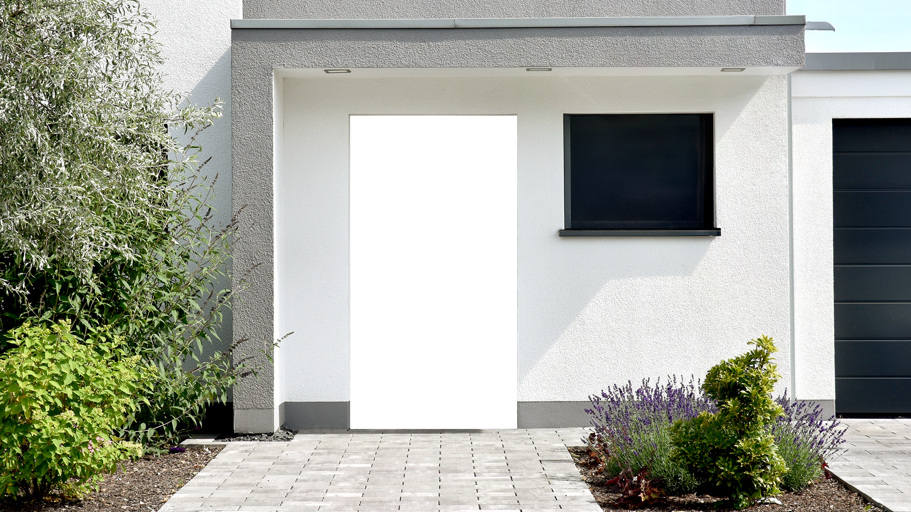

Logo
-
Door Frame
-
House Front
-
Type
-
Color
-
Material
-
Dimension
Tools Sidebar
Enter door width and height to set door dimension

- frame 1
-  frame 2
-  frame 3
-  frame 4
- frame 5
-  frame 6
-  frame 7
- frame 8
- frame 9
- frame 10
-  frame 11